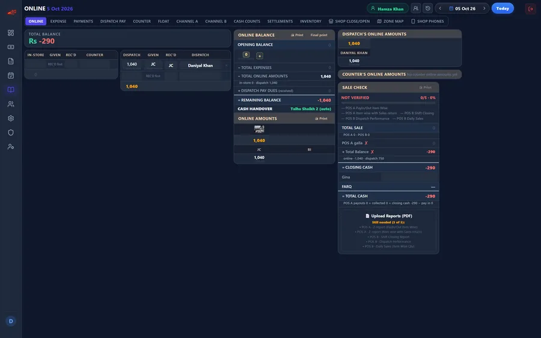
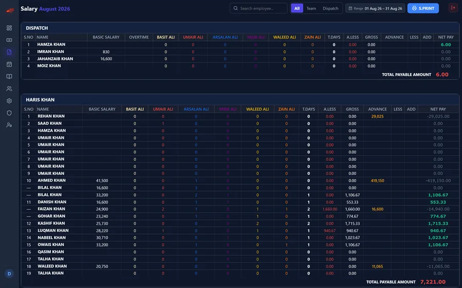
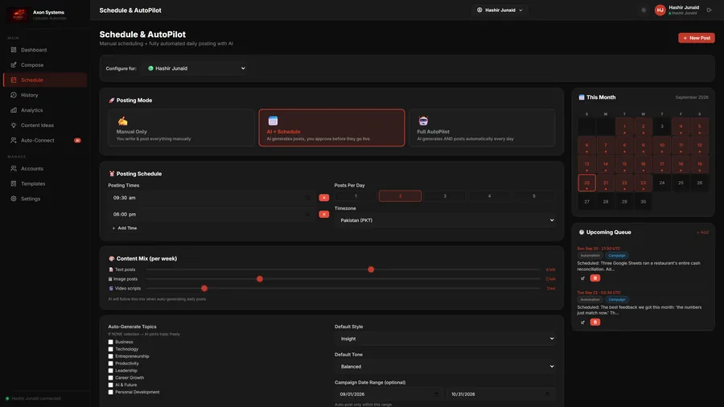
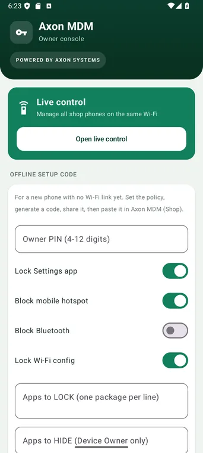
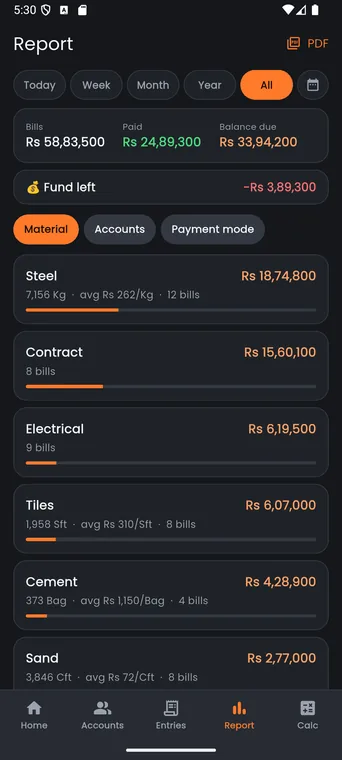
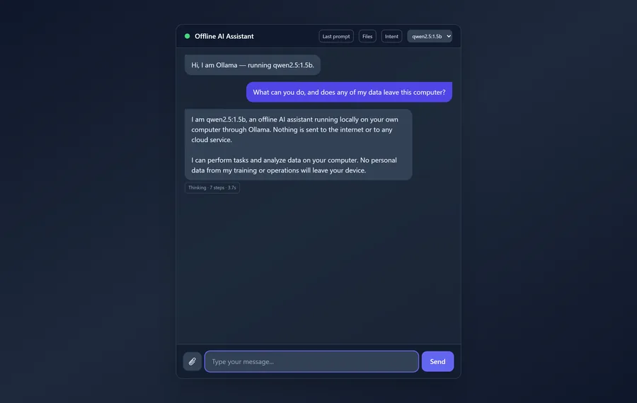

Axon Systems · Karachi
Systems that run businesses, not demos.
Operational software for businesses that run on cash, WhatsApp and trust.
Products
Every screen is the real product.

Axon Ledger
The cash desk of a restaurant, rebuilt so the numbers cannot silently disagree.
See it running →
Axon Attendance
Attendance, payroll and the daily close for a small workforce, in one system.
See it running →
Axon LinkedIn Automate
A multi-account LinkedIn automation SaaS — generate, schedule, post, and measure.
See it running →
AxonCV
A résumé builder that scores itself against ATS rules, and then applies for you.
See it running →
Axon Relay
An Android relay that turns bank notifications into confirmed payments.
See it running →
Axon MDM
Lock down shop phones from an owner's console.
See it running →
Axon Construction
A contractor's site book — materials, labour, and who is still owed money.
See it running →
Axon Offline Chatbot
An AI assistant that runs entirely on your own machine.
See it running →Services
Each one names the product that proves it.
Reconciliation
Cash, online payments and staff accounts, reconciled daily.
Proof: Axon Ledger
Attendance & payroll
Daily marking, month-end payroll computed from it, advances and roles.
Proof: Axon Attendance
Apps for the field
Native and cross-platform, built for one-handed use on site.
Proof: Axon Relay · Axon Construction
Device management
Lock down staff phones and manage them from one console.
Proof: Axon MDM
Automation without an API
Drive a real browser, per account, when no public API exists.
Proof: Axon LinkedIn Automate
AI that earns its place
Generation, scoring and extraction — including fully offline.
Proof: AxonCV · Offline Chatbot
Integrations without an API
Bank notifications and SMS relayed onward, with an offline queue.
Proof: Axon Relay
Contact
Tell us what breaks every day.
That question started every product on this page.